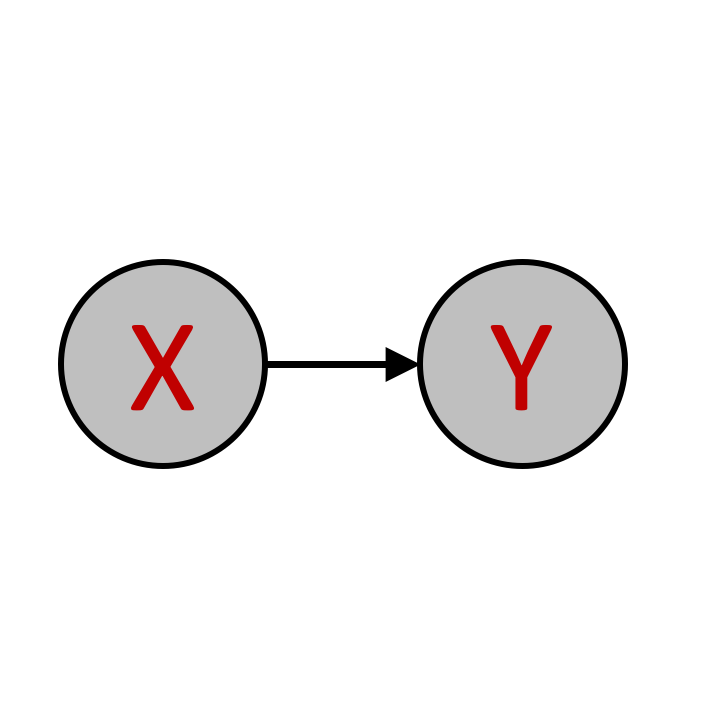
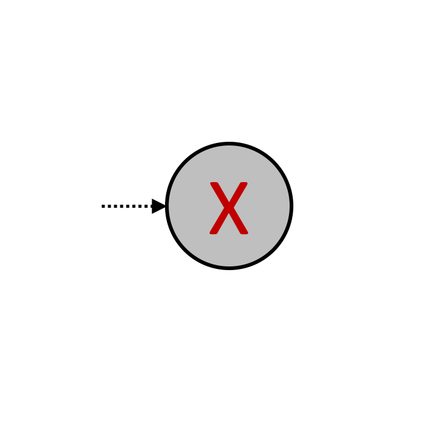
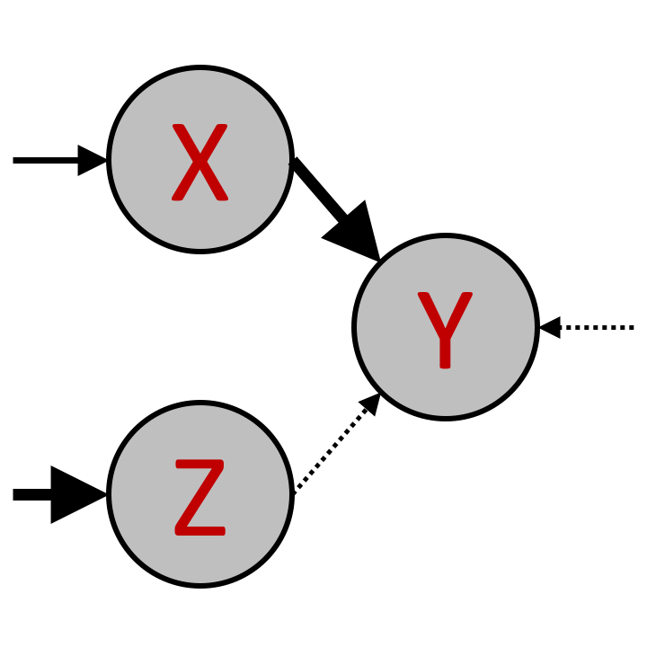
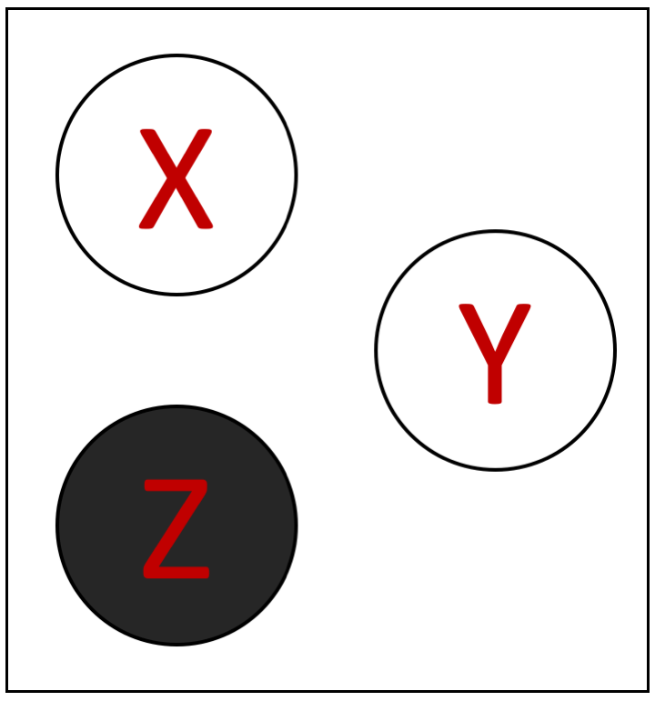
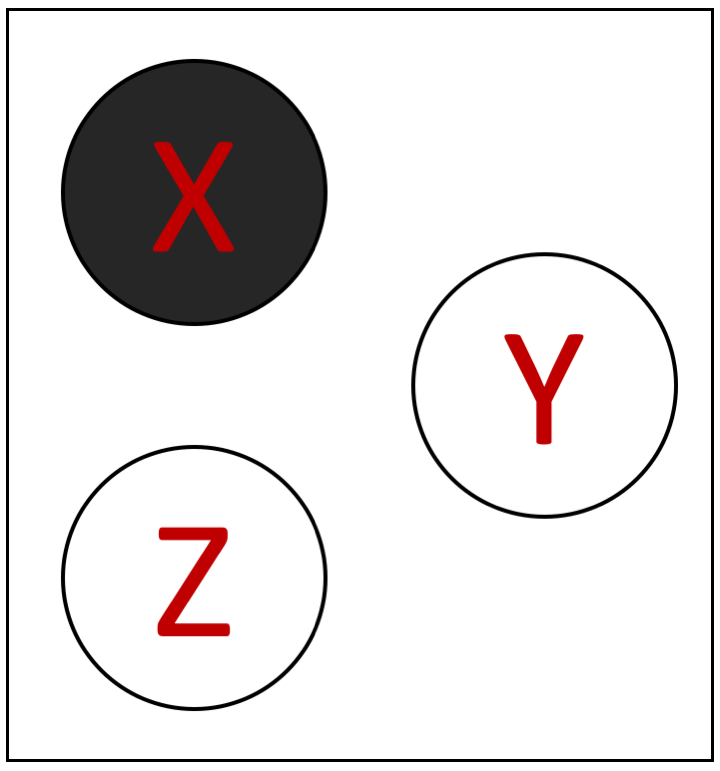
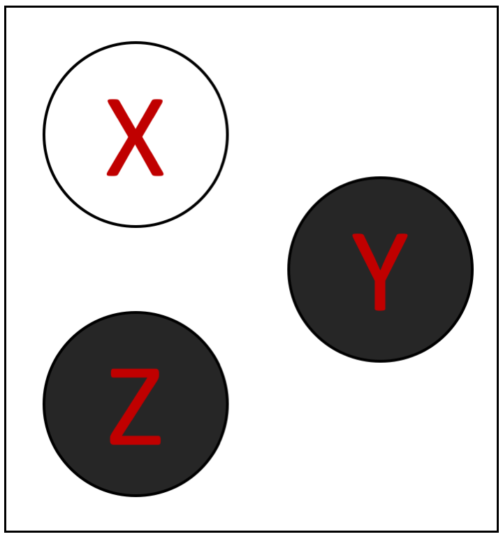
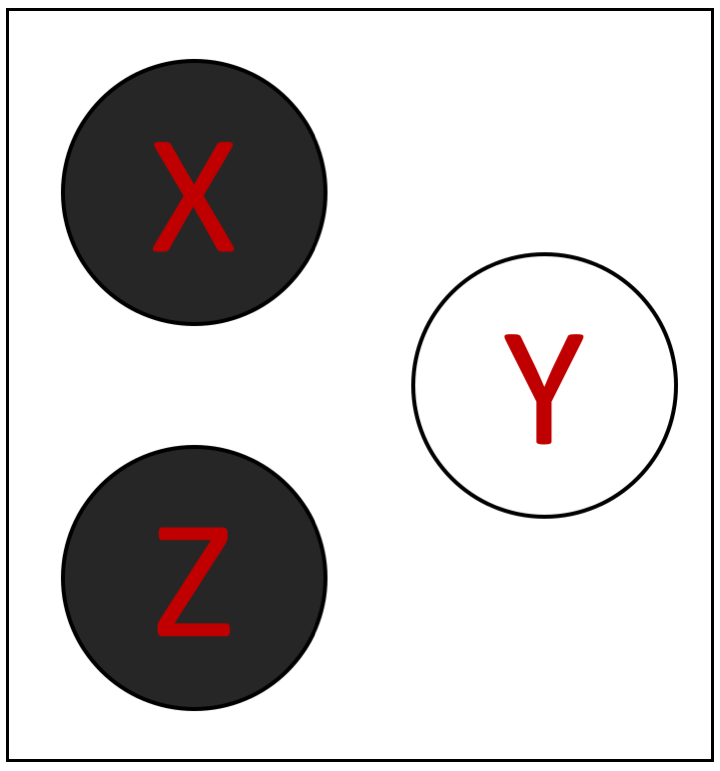

<!DOCTYPE html>
<html>
    <head>
        <title>My experiment</title>
        <script src="../../jspsych-6.1.0/jspsych.js"></script>
         <script src="../../jspsych-6.1.0/plugins/jspsych-html-keyboard-response.js"></script>
         <script src="../../jspsych-6.1.0/plugins/jspsych-instructions.js"></script>
         <script src="custom_plugins/jspsych-two-image-slider-response.js"></script>
         <script src="../../jspsych-6.1.0/plugins/jspsych-image-keyboard-response.js"></script>
        <link href="../../jspsych-6.1.0/css/jspsych.css" rel="stylesheet" type="text/css"></link>
    </head>
    <body></body>
    
     
  <script>


    /* create timeline */
    N_gs = 5
    N_qs = 2
    train_trials = N_gs * N_qs
    test_trials = 5
    N_trials = test_trials + train_trials
    
    var condition = jsPsych.randomization.sampleWithReplacement(['poscorr', 'negcorr'], 1);
    
    console.log(condition)
    
    if (condition == 'poscorr'){
    train_probs = [ 102.,    3.,    2.,   13.,   10.,    2.,   13.,    3.,   13.,
          3.,    2.,    0.,    0.,    7.,    0.,    0.,    2.,    3.,
          2.,    0.,    2.,    0.,    1.,    2.,    0.,    0.,   13.,
         13.,    0.,    0.,    2.,    1.,    0.,    2.,    0.,    2.,
         10.,    7.,    1.,    1.,   22.,    1.,    1.,    7.,   10.,
          2.,    0.,    2.,    0.,    1.,    2.,    0.,    0.,   13.,
         13.,    0.,    0.,    2.,    1.,    0.,    2.,    0.,    2.,
          3.,    2.,    0.,    0.,    7.,    0.,    0.,    2.,    3.,
         13.,    3.,   13.,    2.,   10.,   13.,    2.,    3.,  102.]
    } else if (condition == 'negcorr'){
    
    train_probs = [  13.,    3.,   13.,    2.,   10.,   13.,    2.,    3.,  102.,
          3.,    2.,    0.,    0.,    7.,    0.,    0.,    2.,    3.,
         13.,    0.,    0.,    2.,    1.,    0.,    2.,    0.,    2.,
          2.,    0.,    2.,    0.,    1.,    2.,    0.,    0.,   13.,
         10.,    7.,    1.,    1.,   22.,    1.,    1.,    7.,   10.,
         13.,    0.,    0.,    2.,    1.,    0.,    2.,    0.,    2.,
          2.,    0.,    2.,    0.,    1.,    2.,    0.,    0.,   13.,
          3.,    2.,    0.,    0.,    7.,    0.,    0.,    2.,    3.,
        102.,    3.,    2.,   13.,   10.,    2.,   13.,    3.,   13.]
    }
    
    test_probs = [   0.,    0.,    0.,    0.,    3.,    0.,    0.,    0.,    0.,
          0.,    3.,    0.,    3.,   26.,    3.,    0.,    3.,    0.,
          0.,    0.,    0.,    0.,    3.,    0.,    0.,    0.,    0.,
          0.,    3.,    0.,    3.,   26.,    3.,    0.,    3.,    0.,
          3.,   26.,    3.,   26.,  205.,   26.,    3.,   26.,    3.,
          0.,    3.,    0.,    3.,   26.,    3.,    0.,    3.,    0.,
          0.,    0.,    0.,    0.,    3.,    0.,    0.,    0.,    0.,
          0.,    3.,    0.,    3.,   26.,    3.,    0.,    3.,    0.,
          0.,    0.,    0.,    0.,    3.,    0.,    0.,    0.,    0.]
        
    var graphs0 = []    
    for (var i = 1; i < 82; i++) {
    if (i < 10) {
        graphs0 = graphs0.concat('Slide0' + i);
        } else{
        graphs0 = graphs0.concat('Slide' + i);
        }
          
    }   
    var train_graphs = jsPsych.randomization.sampleWithReplacement(graphs0, 500, train_probs).slice(start = 0, end = train_trials);
    
    var test_graphs = jsPsych.randomization.sampleWithReplacement(graphs0, 500, test_probs).slice(start = 0, end = test_trials);
    
    graphs = train_graphs.concat(test_graphs)
    
        
    var queries0 = []    
    for (var i = 1; i < 9; i++) {
          queries0 = queries0.concat('Slide' + i);
        }

    var reps = 1 + N_trials / 8;
    var queries = jsPsych.randomization.repeat(queries0, reps).slice(start = 0, end = N_trials);
    
    var timeline = [];
    

    /* define welcome message trial */
    var welcome = {
      type: "html-keyboard-response",
      stimulus: "Welcome to the experiment. Press any key to begin."
    };
    timeline.push(welcome);

    /* define instructions trial */
    var intro = {
      type: "html-keyboard-response",
      stimulus: "<p> This study is part of a research project conducted by " +
                "Ishita Dasgupta, Harvard University.</p>"+
                "<p> We want to examine people's intuitions about causes and effects.</p>" +
                "<p> Please read the instructions carefully and try to perform as well as you can.</p>" +
              "<p> If you have any questions, please write an email to  idasgupta@physics.harvard.edu </p><br>"+
              "<p>Press any key to begin.</p>",
    };
    timeline.push(intro);
    
    var instructions = {
      type: "instructions",
      pages: [
        'Welcome to the experiment. Click next to begin.',
        'In this experiment, we want to test your intuitions for cause and effect. <br>'+
        'You will be presented with various <b> causal structures </b>. <br>These causal structures will vary in specific ways as explained in the next pages.',
        
        'The <b>strength of the causal links</b> can vary. <br>The strength is indicated by the type of arrow',
        
        'The three types of causal links are : <br> </img> <b>Weak</b> causal link. <br> Everytime the cause occurs, the effect has a <b>20%</b> probability of ocurring.'+
        '<hr> </img> <b>Moderate</b> causal link. <br>Everytime the cause occurs, the effect has a <b>50%</b> probability of ocurring.' +
        '<hr> </img> <b>Strong</b> causal link.<br> Everytime the cause occurs, the effect has a <b>80%</b> probability of ocurring. <br>',
        
        'The strengths of arrows can be <b>mixed</b> in the same causal structure, for example:'+
        '<br> </img> <br> Indicates a strong causal link between A and C and a weak one between B and C. <br>',
                
        'The two causes A and B act independently on C. <br> If both causes are present, then C is more likely to occur than if only one or none of the causes was present.',
        
        'The <b>probability of the causes</b> being present can also vary. <br>This is indicated by the type of arrows pointing to the cause', 
        
        'The three types of arrows have similar meanings here : <br> </img> <b>Weak</b> probability of occurrence. <br> The cause has a <b>20%</b> probability of occurring.<hr>'+
        '</img> <b>Moderate</b> probability of occurrence. <br> The cause has a <b>50%</b> probability of occurring.<hr>' +
        '</img> <b>Strong</b> probability of occurrence. <br> The cause has a <b>80%</b> probability of occurring. <br>',
        
        'The probabilities of the two different causes can be <b>mixed</b> in the same causal structure, for example:'+
        '<br> </img> <br> Indicates that A has a moderate probability of occurrence while B has a strong probability of occurrence. <br>',
        
        
        'An example causal structure you might see in this experiment is <br> </img> <br> <br>'+
        
        'A is moderately likely to occur <br> B is strongly likely to occur<br> <br>B strongly causes C <br> A moderately causes C<br> <br>',
        
        'Finally, there is some <b> additional noise</b>, and C can sometimes occur (with a <b>20%</b> probability) <br> even when neither A nor B are present. <br> This remains the same across all causal structures, as shown by the weak arrow pointing to C: <br> </img> <br>',
        
        'Given a causal structure of this sort, you will have to make judgments about which of the nodes (A, B, C) are on or off. <br> This is described in the next section.',
        
        'After you are given a specific causal structure, you will see one of the following eight images <br> <br>'+
        '</img> or '+
        '</img> or '+
        '</img> or '+
        '</img>  or <br> <hr> <br>'+
        '</img> or '+
        '</img> or '+
        '</img> or '+
        '</img> <br> <br>'+
        'These indicate the state of the world. <br> A node being black indicates it occurs, being white indicates it does not occur.<br>'+
        'Your task is to guess the probability of the specific state of the world, given the underlying causal structure. <br>',
        
        'We first go through a few examples to build intuitions for the domain.',
        
        'The maximum probability for any pair of causal structure and world state is around 61.95%.<br> This is achieved by the following: <br>'+
        'Causal structure : </img> <br>'+
        'State of the world : </img><hr>'+
        'Both A and B are strongly likely to occur, and they both strongly cause C -- therefore it is very likely that all of the nodes (A, B, C) occur. This makes the proposed state of the world very likely.',
        
        'The minimum probability for any pair of causal structure and world state is around 0.128%.<br> This is achieved by the following: <br>'+
        'Causal structure : </img> <br>'+
        'State of the world : </img><hr>'+
        'Both A and B are only weakly likely to appear, so it is unlikely that A and B are on. Further, they both strongly cause C, so if they occur, it is very unlikely that C will not occur. This makes the proposed state of the world very unlikely.',
        
        'You will be given a response slider to enter your response. <br>'+
        'The maximum value on this slider will be 62% (~61.95%), and the minimum will be 0% (~0.128%), <br> since this is encompasses the range of possible probabilities in this domain. <br> The slider will be initialized at the mid-point of this range at 31%.',
        
        'Note however that the average probability over all possible states is much lower than the midpoint of 31%. <br>'+
        'If all the states were equally likely, they would each occur with probability of 100 / 8 = 12.5%.<br> '+
        'Therefore the average probability is 12.5% -- this means that most responses shoudl lie below the midpoint of 31%.',

        'You will have to enter a judgement by moving the slider in order to move on to the next question. <br> Please try to be as accurate in your judgement as possible.',    
        
        'Click Next to start the experiment. <br>You will not be able to return to the instructions once you begin'
    ],
    show_clickable_nav: true
    };
    
    timeline.push(instructions);
    


    /* test trials */
    
    for (var trial = 0; trial < N_trials; trial++){
    
        var view_trial = { 
          type: "image-keyboard-response",
          stimulus: 'draw_stimuli/'+graphs[trial]+'.png',
          stimulus_height: 300,
          choices: jsPsych.NO_KEYS, 
          trial_duration: 2000,
          }
          
        timeline.push(view_trial)

        var response_trial = {
          type: "two-image-slider-response",
          stimulus_height: 300,
          resp_stimulus_height: 120,
          max: 62,
          labels: ['0%', '62%'],
          start: 31,
          button_label: 'Submit',
          require_movement: true,   
          stimulus: 'draw_stimuli/'+graphs[trial]+'.png',
          resp_stimulus: 'draw_options/'+queries[trial]+'.png',
          }
    
        timeline.push(response_trial);
      
    }

    

    /* start the experiment */
    jsPsych.init({
      timeline: timeline
    });
  </script>
  </html>